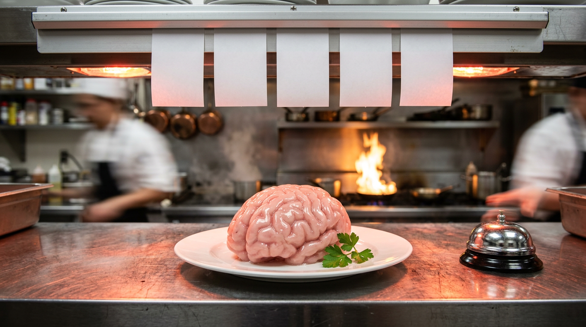

Outsourcing Thinking to AI: The Priest Became a GPU
First We Gave Our Souls to the Priest and Our Stomachs to the Waiter. Now the Chatbot Wants the Brain Pan, and We’re Holding the Door.
There is a moment, usually around 11 p.m., usually at a drive-thru speaker, when a grown adult with a mortgage and a library card realizes he has no idea what he wants.
The menu is enormous. The line behind him is honking. A voice crackles out of a dented metal post, a teenager in a headset who sounds like Billie Eilish narrating a hostage video, and asks, “Do you want the combo?”
And he says yes.
He didn’t want the combo. He doesn’t know what’s in the combo. But somebody else did the deciding, the bag comes through the window warm, and the relief is so total, so sweet, so close to religious that he forgets he ever had a choice.
That’s us. That’s the species. We have been sitting at that speaker for about ten thousand years, and the only thing that ever changes is who’s wearing the headset. Now the headset is plugged into a GPU, and outsourcing thinking to AI is just the latest shift at the window.
I’m worse. I don’t even need the drive-thru. When I can’t make up my mind between two things on a menu, I look up at the waiter and ask which one is their favorite. Not which is better. Their favorite. I’m handing a stranger with a notepad the keys to my evening based on his personal taste, and I don’t know his name, his tongue or his criminal record. He could hate food. He could be a vegan on a revenge tour. Doesn’t matter. He points, I order, and I feel lighter than a man who just went to confession.
Hold onto that waiter. He’s going to show up again wearing a much bigger headset.
Yes, you. Don’t look over your shoulder, there’s nobody there. You, with the phone in one hand and something you didn’t cook in the other. You’re in this too. Pull up a chair, the chair’s been chosen for you.
STOP.
Turn signal on, because this post is going to do something rude. It’s going to look like a rant about AI making us stupid… and then it’s going to jump the median, plow through a monastery, a 1760s Paris soup shop and a Yale basement full of fake electric shocks, and arrive at a much less comfortable idea. That AI isn’t robbing us of anything. We’re begging it to take the keys.
I’m not freaking Steven Pinker. I’m a guy with a blog and a library card and a dangerous amount of free time. But the people who did the research are out there, and I read them so you can… well. You see the problem.
The Brain Is a Very Expensive Organ and It Wants a Nap
Start with the meat.
The human brain is about 2% of your body weight and burns roughly 20% of your resting energy. It is the Ferrari in the garage of a man who lives on ramen. Every time you actually think, carefully, against the grain, the gas gauge moves.
So the brain cheats. All the time. Gloriously.
This is not a character flaw. It’s engineering. A brain that deliberated from scratch about every single thing would starve to death in front of the fridge, weighing the ethics of yogurt.
So we offload. We always have. Psychologists Evan Risko and Sam Gilbert call it cognitive offloading: any time you use something outside your skull to reduce the work inside it. The string around your finger. The calendar. The spouse who remembers everyone’s birthday. Daniel Wegner called that last one transactive memory: couples and teams split up the remembering, so each brain only has to know who knows what.
And in 2011 a team led by Betsy Sparrow published a paper in Science showing that when people expect to be able to look something up later, they remember the fact less and remember where to find it more. The brain stops storing the furniture and just keeps the address of the warehouse.
Fine. Efficient. Even sweet, in a Lady-and-the-Tramp-sharing-one-noodle kind of way.
But the warehouse is the point. Because the warehouse has an owner.
The First Thing We Outsourced Was Our Stomach

Before we outsourced our souls, we outsourced our guts.
Harvard primatologist Richard Wrangham makes the case in Catching Fire (2009) that cooking is what made us human. Fire does part of the digesting before the food ever hits your mouth. It softens, breaks down, unlocks calories. His argument is that our ancestors, somewhere around the time of Homo erectus, handed a chunk of digestion over to the campfire, and the payoff was enormous: smaller guts, smaller teeth, less time chewing like a cow with a grudge, and a surplus of energy that went into… the brain.
Read that again, because it’s the whole post in one sentence. The first great outsourcing made us smarter. We gave a job to the fire and spent the savings on thinking.
Hold that thought. We’re coming back for it with a fork.
Then, much later, we outsourced the cooking itself.
I need you to sit with that, because it’s going to come back and bite somebody. Probably you.
From that broth we built the whole glittering machine: the menu, the waiter, the chef you’ll never meet, the meal you’ll never understand, the kitchen you’re legally not allowed into. We stopped knowing how our food was made, and that was fine, because we got lasagna and Tuesdays off.
Same deal with the soul. Same deal with the mind. Different broth.
Then We Outsourced the Hard Questions
Here’s the part where I lose some of you.
Think about the biggest, ugliest, most unsolvable questions a human being can face. When does a life begin? Who’s allowed to love whom? Should the state ever kill a prisoner? When is a war just?
Now ask yourself honestly: did you reason your way to your answer, alone, from first principles, at a kitchen table at 3 a.m.? Or did it arrive pre-cooked, from the pulpit, the party, the family dinner table, the cable host with the good hair?
I’m not telling you which answer is right. Pick a side, any side, on any of them. The point isn’t where you landed. It’s who drove.
Mine came when I was a little kid, and it was the big one. The schism. The question that has split households, dorm rooms and comment sections for half a century: Star Trek or Star Wars?
I didn’t reason my way there. I didn’t weigh the Prime Directive against the Force. My dad was the decision maker in our house, and he settled it with one line of theology: “Wait till you see the Princess in the slave getup.”
Star Wars. Forty-odd years. Never questioned it. Picked a side in a holy war on the strength of a metal bikini and a father’s sales pitch, and I defended that side like a crusader for four decades.
And lately, God help me, I’ve been thinking about switching. Which tells you exactly how heresy feels from the inside. Like betraying your dad. Over a spaceship.
Sociology saw this coming a long time ago.
Émile Durkheim, in 1893, called it the collective conscience: the shared beliefs and moral sentiments of a group, which sit above any one person and do the thinking on everyone’s behalf. Religion, he argued, was the great machine for producing it. Not because people are stupid. Because a group that agrees on what’s sacred can cooperate, and a group that has to re-argue morality every morning cannot get the harvest in.
Psychology came along later and found the wiring. Jonathan Haidt’s social intuitionist model, from a 2001 paper with the glorious title “The Emotional Dog and Its Rational Tail,” argues that most of our moral judgments are fast gut reactions, and the reasoning shows up afterwards, like a press secretary explaining a decision the boss already made. We feel first. We justify second. And the gut, mostly, was trained by the tribe.
And when somebody steps out of the tribe’s answer?
That’s what “heretic” is for. That’s what “possessed” was for. Today we have different words, and every camp has its own set, and every camp swears the other camp invented the practice. They didn’t. It’s older than writing.
And just in case you think you’d be the brave one:
Solomon Asch, early 1950s. He showed people three lines on a card and asked which matched a fourth. Easy. Then he packed the room with actors giving the wrong answer. About three out of four real participants went along with the obviously wrong group at least once.
Stanley Milgram, early 1960s. He had participants deliver what they thought were escalating electric shocks to a stranger, on the instructions of a man in a lab coat. In the best-known version, 65% went all the way to the maximum 450 volts. Milgram called the mindset the “agentic state”: you stop seeing yourself as the author of your actions and start seeing yourself as the instrument of someone else’s.
The instrument of someone else’s. Write that on the drive-thru speaker.
Kant Stole My Rant in 1784
Talk about doing a tango with the narrative. You thought I was going to blame the robots and instead I walked into an 18th-century Prussian lecture hall, sat down in the front row and got out-ranted by a man who never left his hometown.
In 1784 Immanuel Kant answered the question “What is Enlightenment?” His answer: humanity leaving behind its self-incurred immaturity, which he defined as the inability to use your own understanding without someone else’s guidance. Self-incurred, he said, because the problem isn’t a lack of brains. It’s a lack of nerve.
And then he listed, I swear on my lughole, the exact things I was going to list. He said it’s so comfortable to stay immature. If you’ve got a book to be your understanding, a pastor to be your conscience, a physician to decide your diet… you don’t have to trouble yourself at all. You don’t need to think, as long as you can pay.
Book. Pastor. Diet. The mind, the soul and the stomach. Kant did my whole post two hundred and forty-two years early, in German, without a single grawlix. I’d sue, but he’s been dead since 1804 and I think the statute of limitations is pretty firm.
He wasn’t alone. Dostoevsky, in The Brothers Karamazov (1880), gave us the Grand Inquisitor, who tells a returned Jesus that people don’t want freedom. They want bread. They want miracle, mystery and authority, and they will happily lay their freedom at the feet of whoever feeds them. Bread, again. It’s always the kitchen.
Then in 1941, with Europe on fire, the psychoanalyst Erich Fromm wrote Escape from Freedom. His argument, roughly: freedom is terrifying. Modern people, cut loose from the old certainties, feel isolated and anxious, and many flee back into submission, into a strongman, a movement, a crowd. Not because they’re forced. Because the weight of choosing is unbearable and someone offered to carry it.
That’s the hunger. That’s what I mean when I say we’re begging. Nobody has to steal your mind. You’ll hand it over for a warm bag and the feeling that somebody, somewhere, has it handled.
Not Clergy. GPUs.
Which brings us, at long last, to the new kid in the headset.
First, a correction to my own sketch, because I’m the guy who’s supposed to be thinking for himself here. We haven’t built superintelligence. Nobody has. The word gets thrown around (the federal government literally renamed AI “Super Intelligence” by executive order this fall, which I covered with the dignity it deserved), but what’s actually in your pocket is a very large autocomplete. We haven’t even built the god yet. We’re already confessing to the altar boy.
And we’re confessing a lot.
The receipts:
The moral one. In 2023, Sebastian Krügel, Andreas Ostermaier and Matthias Uhl asked ChatGPT, repeatedly, whether it’s right to sacrifice one person to save five. It argued for. It argued against. Inconsistent, depending on phrasing. Then they gave one of those statements to 767 American participants before they answered the same dilemma. Their judgments moved toward the bot’s argument, even when they were told it came from ChatGPT, and they underestimated how much it had influenced them. Published in Scientific Reports. A coin toss with good grammar, and people followed it.
The work one. In 2025, researchers from Microsoft and Carnegie Mellon surveyed 319 knowledge workers about 936 real examples of using generative AI on the job. The more confident people were in the AI, the less critical thinking they reported doing. The more confident they were in themselves, the more they checked. Self-reported, so take it as a confession rather than a brain scan, but it’s a confession from the people actually using the thing.
The brain one. Also in 2025, Nataliya Kosmyna and colleagues at the MIT Media Lab had 54 people write essays over several months, with ChatGPT, with a search engine, or with nothing. EEG showed the brain-only group with the strongest, most widespread connectivity, the search group in the middle and the ChatGPT group the weakest. The ChatGPT writers felt the least ownership of their essays and struggled to accurately quote what they’d just “written.” Small study, preprint, one task, and the authors themselves beg the press not to call it brain damage. Fair. I’m not. I’m calling it a broth.
There it is. The restaurant came back. A cup of warm, pre-digested thought for the weak-chested. Delivered in seconds. No chewing.
The Average of Everybody Is Nobody
Now the part that’s actually new. Because the priest and the party and the cable host were all somebody. They had faces, biases, bad haircuts, specific sins. You could argue with them, leave them, start your own church out of spite.
A language model is trained on the written output of enormous numbers of people and built to produce the likely next word. Likely. It’s the median, served hot. The consensus of the crowd, with the crowd’s edges sanded off.
And the research is starting to show what happens when everybody eats from the same pot.
That’s the twist on the old outsourcing. The pulpit gave each village its own dogma. Villages disagreed. Wars, schisms, Reformation, fistfights at Thanksgiving: horrible, yes, but also how ideas mutated and competed and occasionally improved.
The new pulpit gives every village the same sermon. Personalized in tone, identical in skeleton. Eight billion people, one combo meal, slightly different sauce.
The Case Against Me
Fairness, before the top comment does it for me.
Outsourcing is how we won. Alfred North Whitehead, 1911: civilization advances by extending the number of important operations we can perform without thinking about them. He’s right. Anthropologist Joseph Henrich, in The Secret of Our Success (2015), shows that humans dominate the planet precisely because we trust inherited culture we don’t understand. His favorite example is manioc: in parts of South America, communities process the root through a long, tedious ritual of soaking, scraping and waiting that nobody could fully justify, and that ritual is what removes the cyanide. The people who skipped the “pointless” steps to think for themselves got chronic poisoning. Sometimes the dogma is smarter than the rebel.
Every new tool got this exact eulogy. In Plato’s Phaedrus, Socrates warns that writing will produce forgetfulness and the mere appearance of wisdom. He said that, and we only know he said it because somebody wrote it down. Calculators were going to end arithmetic. Google was going to end memory. Some of those fears came half-true. None of them ended the world.
The studies are early. The MIT study is 54 people writing SAT essays. The Microsoft one is self-report. The Krügel study used an early ChatGPT on a trolley problem, not your real life. Nobody has shown that AI is permanently rewiring a generation, and anyone who tells you otherwise is selling a book.
And the bot can argue both sides. Unlike a pulpit, you can ask a model for the strongest case against your own view, and it’ll give it to you. The Krügel team literally recommended building bots that offer multiple arguments and caveats instead of one verdict. A tool that can show you the other side is a strange kind of dogma.
All true. I’ll even concede the big one: outsourcing isn’t the sin. Wrangham’s fire proves it. Henrich’s manioc proves it.
The question was never whether to outsource.
So What Do We Do With the Leftover Calories?
Here’s where the fork comes back.
When we outsourced digestion to the fire, the energy we saved went somewhere. It went into the brain. That was the deal: the fire chews, you think.
So the honest question about AI isn’t “should I let it do my thinking.” It’s: what am I spending the savings on?
If the chatbot drafts the email so you can spend the hour on a problem nobody’s solved, that’s the campfire. That’s Homo erectus getting smarter. If it drafts the email so you can spend the hour scrolling videos of a raccoon stealing a croissant… that’s the broth. That’s the restaurant for people who can’t chew, and you’re the one wheezing at the counter.
Confession time, and this is the strange part: I don’t have one. Not because I’m virtuous. Because I’m old. I build with this stuff for a living and I’ve never once handed it anything that actually mattered. My hard questions got outsourced decades ago, to my dad and a princess in a metal bikini, and there’s no room left on the plate.
You, though. You’re younger than me, probably, and you grew up with the speaker already in the wall. Be honest. What did you ask it this week that you could’ve chewed yourself?
The Microsoft study hides the only practical advice I trust in its own data: the people who kept thinking were the ones confident in themselves. So feed that. Answer the question in your own head before you ask the machine, then use the machine to attack your answer, not to replace it. Ask it for the best argument against you. Ask the hard moral questions out loud, to an actual human, preferably one who’ll yell. Read one thing a week that was written by a single weird, specific, unaveraged person.
You know. A heretic.
Kant’s motto for the whole Enlightenment was two Latin words, borrowed from Horace: sapere aude. Dare to know. Dare to use your own understanding. He didn’t say never ask anyone. He said dare. Because it costs something. It always did. Twenty percent of your resting energy, to be exact.
Last call.
Somewhere tonight a grown adult will pull up to a speaker in the dark. The voice will crackle. “Do you want the usual?” And the bag will come out warm, and the broth inside will be smooth and soft and perfectly average, made for the weak-chested by a kitchen he’ll never see, and it’ll taste exactly like everybody else’s.
And he’ll say yes. Or he’ll ask the guy in the headset which one is his favorite, which is what I’d do, which is worse.
Don’t be the guy who says yes. Or at least read the f@$king menu first.
Quick Questions From the Cheap Seats
Is AI making us stop thinking?
Not exactly. The early research shows people tend to think less critically when they trust the AI more (Microsoft/Carnegie Mellon, 2025), and that heavy reliance on a chatbot for writing goes with lower brain engagement and weaker memory of your own work (MIT Media Lab, 2025). Both studies are early and limited. The bigger risk is habit, not damage.
What is cognitive offloading?
Using something outside your head to reduce the mental work inside it: a calendar, a note, a calculator, a partner who remembers birthdays, a search engine, a chatbot. It’s normal and often useful. It becomes a problem when you stop being able to do the task, or stop checking the thing doing it for you.
Can ChatGPT influence your moral judgments?
A 2023 study in Scientific Reports found that reading ChatGPT’s argument on a trolley-style dilemma shifted participants’ answers toward the bot’s position, even when they knew it came from a chatbot, and that they underestimated how much they’d been influenced.
Does AI make everyone’s ideas the same?
There’s evidence pointing that way. A 2024 Science Advances study found AI-assisted short stories were rated more creative individually but were more similar to one another than stories written without AI.
Is outsourcing thinking always bad?
No. Humans have always relied on inherited knowledge, experts and tools, and that reliance is part of why we succeeded as a species. The question is whether you use the time and energy you save to think about something else, or just stop.
What did Kant say about thinking for yourself?
In his 1784 essay “What is Enlightenment?” Kant argued that people stay immature not from lack of intelligence but from lack of courage, and that it’s comfortable to let a book, a pastor or a doctor do your thinking for you. His motto: sapere aude, dare to know.